Synology#
Installer les packages MariaDb et activer le serveur web
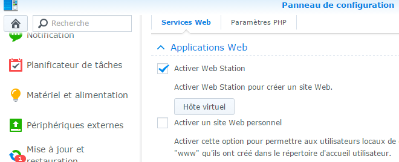
Allez dans le repertoire Web
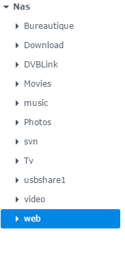
Creez un dossier "okovision"
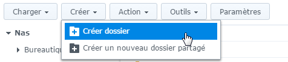 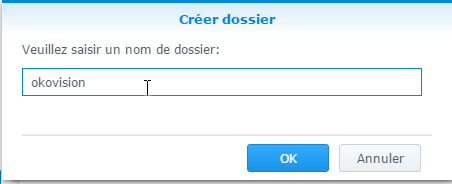
Ouvrez l'archive de source d'okovision que vous venez de télécharger et copiez les dans le repertoire que vous venez de creer precedement
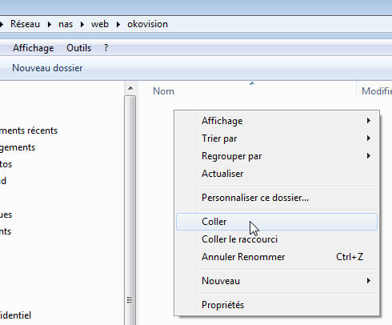
Dans le NAS, faites clic droit sur le repertoire "okovision", puis propriétés
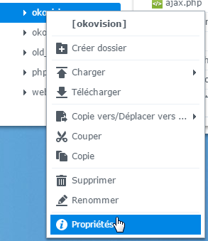
Changez le propriétaire et appliquez pour les sous-repertoires
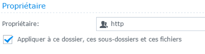
Configuration de Web Station et de PHP#
Note: Vous devez verifier que les modules PHP sont bien activés.
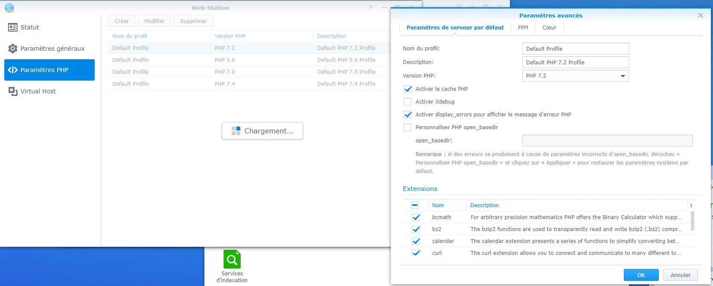
Ci-dessous, le liste des modules.
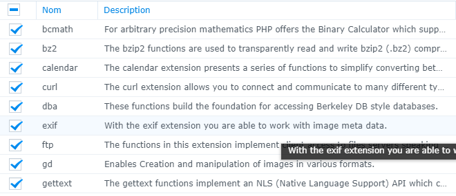 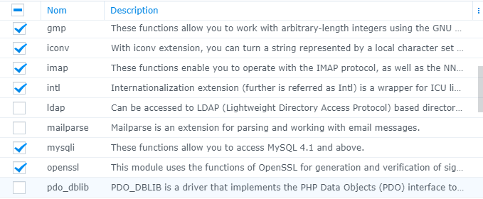 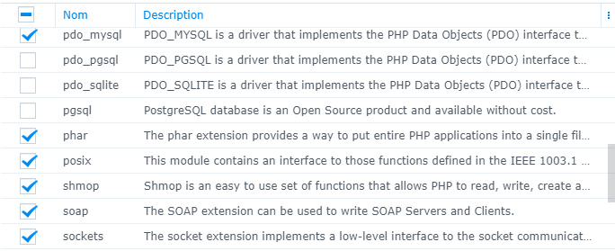 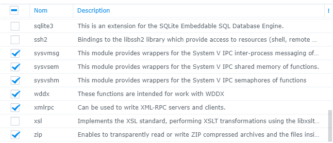
Acces à l'application#
Avec votre navigateur, accedez à okovision http://[ip]/okovision (si vous avez la page de setup c'est tout bon)
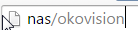
Cron sous Nas synology#
Aller dans le plannificateur de taches
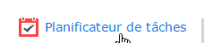
Creez une nouvelle entrée avec les informations suivantes (a adapter pour les chemins)
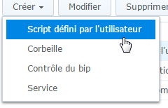
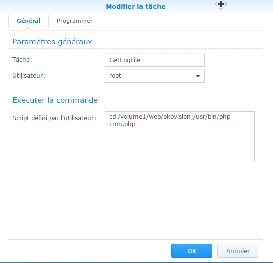
ou
Récurrence de l'execution#
Important
Vous devez faire executer votre script tous les 2 heures minimum. En dessous cela ne sert à rien
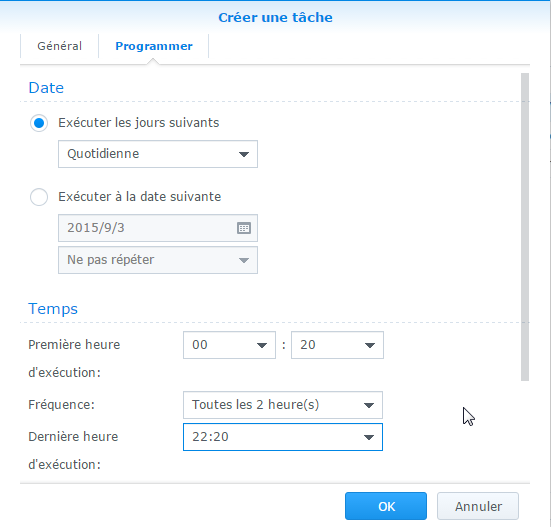